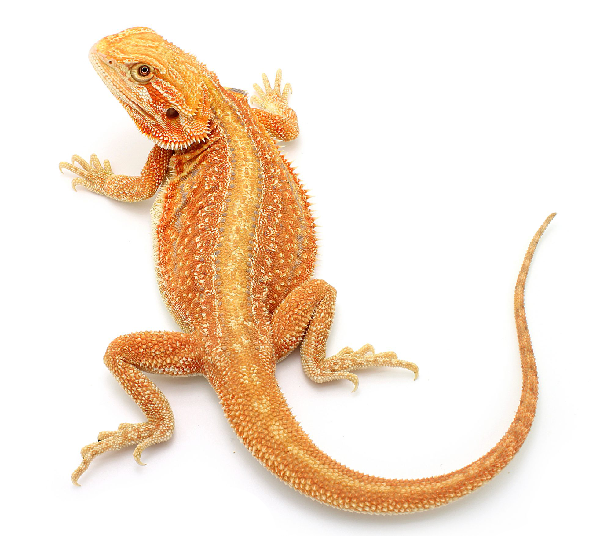

BEARDED DRAGON
Бородатая
Австралия
Бородатая
агама
Австралия
Среднего размера ящерица с широким уплощенным телом. Голова широкая, треугольной формы. Углы рта, область вокруг ушного отверстия и особенно горло бородатой агамы покрыты острыми чешуйками-колючками, расположенными в виде буквы V – это и есть та самая «борода», украшение, делающее мордочку этой рептилии такой выразительной.
